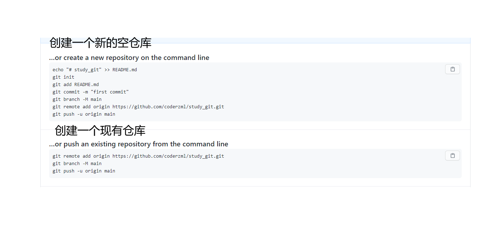

目录
目录前言Git是什么？集中式和分布式安装git创建版本库仓库文件的操作修改文件时空机穿梭版本回退工作区和暂存区撤销修改删除操作远程仓库添加 SSH key创建远程仓库克隆远程仓库分支管理创建与合并分支switch小结 分支命令解决冲突分支管理策略创建功能分支多人协作拉取分支标签管理创建标签删除标签giteegit pages自定义git命令（简化）命令表
前言
1git status2git add .3git commit -m 'xxx';4git push- 不要再四个命令用到老了，这篇文章带你更加深入的了解git
- 你所学的Git命令是
充分且必要的，掌握了这些东西，你就可以通过Git轻松地完成你的工作。
Git是什么？
- Git是目前世界上最先进的分布式版本控制系统（没有之一）。
- 版本控制系统指的是 ：追踪文件的变更。它将什么时候、什么人更改了文件的什么内容等信息忠实地了记录下来。每一次文件的改变，文件的版本号都将增加。
- 口述一下git的诞生：如今火爆全球的Linux操作系统的作者——Linus 创建的git，但Linux的壮大是靠全世界热心的志愿者参与的，那个时候全国各地的人都帮Linus写代码，那这么多版本代码怎么管理呢？前期Linus还只是通过手工合并代码的方式，但是后来越发的壮大，已经很难通过手工管理代码了。之后Linus选择一个收费的版本控制系统BitKeeper，BitKeeper出于人道主义没收钱，但是随着Linux的不断壮大 不免有些江湖人士，这些大牛试图破解BitKeeper的协议，结果被BitKeeper发现了。BitKeeper很生气要收回给Linux社区的免费权，这个时候 Linus 用了两周的时间 用C语言写了git，如今火爆全球。
集中式和分布式
集中式代表 svn
- 集中式要有一个中央服务器，干活的时候要先去中英服务去拿版本，然后用自己的电脑再改，改完之后 再推动到中央服务器
- 就好比 图书馆就是一个中央服务器，你要改一本书，要先去图书馆把书拿到 再回家改，改完再还给图书馆
分布式代表 git
- 分布式的特点就是 不用中央服务器，因为每个人的电脑就是中央服务器，可以互相访问，如果要让对方看到自己的修改内容的话 直接 访问自己的中央服务器即可
安装git
windows系统安装方式
- git官网：https://git-scm.com/downloads
- 下载安装即可，之后右键会多两个选择 git Gui 和 git bash 前者是git的可视化操作，后者是git的命令行操作
- 记得初始化 因为使用git之前都需要自报家门
xxxxxxxxxx21$ git config --global user.name "Your Name"2$ git config --global user.email "email@example.com"创建版本库
创建版本库又名 “创建仓库” 也名 “创建目录” 还名 “创建本地文件夹”
第一步非常简单
- 找一个合适的位置 右键新建即可（哈哈哈哈哈哈哈哈哈）
- 注意：避免奇奇怪怪的问题 路径不要出现 中文！
第二步
在文件夹内用git bash 通过
git init命令把这个目录变成Git可以管理的仓库：xxxxxxxxxx11git initgit会给你说 创建好了 ， 这是一个空仓库
你会发现文件夹内多了一个 .git 的文件夹 里面的东西就不要改了，改坏了仓库也就坏了
如果你看不到 那应该是被隐藏了，设置文件夹显示即可
不在空的文件夹内执行这两步也是没问题的
第三步 添加文件
- 比如这里添加了个 test.txt文件(随便写点内容，不写也行。写内容的目的是想告诉你 git是可以检测到文件编码是 UTF-8 的内容的)
第四步 把文件推送到本地
- 先执行 git add test.txt 意思是把这个文件添加到本地
- 你会发现没有任何返回 Unix的哲学是“没有消息就是好消息”，说明添加成功。
- git add . 是全部添加
- 再执行 git commit -m '描述';
- 如果报错想复制报错内容到百度翻译是时候 记住 ctrl+cv在git命令行中是不能用的
- ctrl+insert 是复制 shift+insert是粘贴
仓库文件的操作
修改文件
- 此时 你要修改 text文件，修改完后 可以用 git status查看状态
- git就会给你说哪些文件被修改了
- 如果你想看一下修改了什么内容 可以执行 git diff
- 就可以看到哪里被修改了 这时再添加带本地仓库就有安全感了
- git add 和 git commit 都执行后 在执行 git status 就会告诉你 工作目录是干净（working tree clean）的。
时空机穿梭
版本回退
版本回退指的是 在你提交之后 发现 还是上一版或者上上一版的内容好点的话 就可以使用版本回退
使用 git log查看你commit的日志
出现的便是你每次commit的记录，
- 每段日志中 commit代表一个id 用来回退版本用
- author代表的是来源（谁提交的）
- Date代表的是时间 啥时候提交的
现在我们要回退到上个版本怎么操作呢
使用git reset便能恢复 HEAD代表版本号 一个^ 是上一版本 两个^^是上上版本 那100个的话可以用 HEAD~100 代替
xxxxxxxxxx11git reset --hard HEAD^这个时候版本已经回退到上一版本了
如果你在已经打开中的项目回退版本，那么请你关闭项目再重新打开即可 否则你会感觉没出效果
此时在git log 就会发现 最新的一次日志没了，因为回退版本了嘛，那要是我还想回去怎么办呢，还是有办法的 只要不把这个git bash窗口关闭就行，此时你需要去找 你上上次log的时候 出现的commit id
比如我上次打印的日志是这些
- x1
$ git log2commit 69d90afda7418d422e926dc89ea3e4aa6a6cf83b (HEAD -> master)3Author: coderzml <381212972@qq.com>4Date: Thu Mar 25 16:51:03 2021 +080056then78commit 249afa01fc32a1cd5fef8f9106476ea031d596069Author: coderzml <381212972@qq.com>10Date: Thu Mar 25 16:40:29 2021 +08001112first submit13 我要回到 then这个版本里 只需
xxxxxxxxxx11git reset --hard 69dp输入日志中的commit ID 就行，不输入全也没问题 git会帮你去找，但是也不能只输一位或者两位 这样git也不知道你要回退到哪个版本
所以在回退版本之前最后 git log 一下日志，防止想回去找不到路
现在，你回退到了某个版本，关掉了电脑，第二天早上就后悔了，想恢复到新版本怎么办？找不到新版本的怎么办？
在Git中，总是有后悔药可以吃的。当你用
$ git reset --hard HEAD^回退到某个版本时，再想恢复到新版本，就必须找到新版本的的commit id。Git提供了一个命令git reflog用来记录你的每一次命令：xxxxxxxxxx61$ git reflog269d90af (HEAD -> master) HEAD@{0}: reset: moving to 69d93249afa0 HEAD@{1}: reset: moving to HEAD^469d90af (HEAD -> master) HEAD@{2}: commit: then5249afa0 HEAD@{3}: commit (initial): first submit6- 前面 那段 就是 id 比如：249afa0 是你想回去的那个版本
然后再回去即可
xxxxxxxxxx11git reset --hard 249afa0
工作区和暂存区
- 暂存区是Git非常重要的概念，弄明白了暂存区，就弄明白了Git的很多操作到底干了什么。
- 首先 工作区指的就是你的仓库文件夹 而暂存区 指的是你文件夹内 .git文件内的storage
- 默认 .git 文件中的暂存区会自动生成一个 master（主）分支
- git add 就是把工作区的内容提交到暂存区
- git commit是把暂存区的内容提交到master分支
- 提交完之后暂存区storage就会变为空，此时在 git status 就会但会 都是新的没有可更新的内容
- 如果你明白暂存区和工作区的概念 那么如果执行以下流程
- 第一次修改 ->
git add-> 第二次修改 ->git commit - 你就要知道 提交的内容 并没有第二次修改的 内容，因为第一次修改后 add了，添加到了暂存区，而第二次修改并没有添加到暂存区 而是 直接commit了
- 解决办法就是 别急着add 而且一起 add 一起 commit 注意顺序
撤销修改
如果要撤销工作区的修改（并没有add到暂存区）不指定文件代表撤销全部
xxxxxxxxxx11git switch -- test.txt重新打开文件即可
如果要撤销已经add到暂存区的文件
xxxxxxxxxx11git reset HEAD text.txtreset不仅能回退版本还能回退暂存区，HEAD是最新版本
如果也要丢弃工作区的修改 同上 再执行一遍即可(如果不想丢弃 重新修改内容即可)
现在，假设你不但改错了东西，还从暂存区提交到了版本库，怎么办呢？还记得版本回退一节吗？可以回退到上一个版本。不过，这是有条件的，就是你还没有把自己的本地版本库推送到远程。还记得Git是分布式版本控制系统吗？我们后面会讲到远程版本库，一旦你把
stupid boss提交推送到远程版本库，你就真的惨了……
删除操作
如果你现在误删一个文件 并且这个文件在版本库中有存在 可以使用
xxxxxxxxxx11git checkout 文件名文件只要被提交到过版本库 就不要怕被删除，回退版本即可（当然你会丢失你本次的所有修改,如果你想保留 本地修改也commit一下，回退版本后 如果不想要，可以再回来最新的版本）
远程仓库
添加 SSH key
第一步
在用户主目录（C:\Users\Administrator 大致位置在这）下，看看有没有.ssh目录，如果有，再看看这个目录下有没有
id_rsa和id_rsa.pub这两个文件，如果已经有了，可直接跳到下一步。如果没有，打开Shell（Windows下打开Git Bash），创建SSH Key：xxxxxxxxxx11$ ssh-keygen -t rsa -C "381212972@qq.com"然后 一路回车 都是用默认值即可
如果一切顺利的话，可以在用户主目录里找到
.ssh目录，里面有id_rsa和id_rsa.pub两个文件，这两个就是SSH Key的秘钥对，id_rsa是私钥，不能泄露出去，id_rsa.pub是公钥，可以放心地告诉任何人。
第二步
- 登陆GitHub，找到设置打开“Account settings”，“SSH Keys”页面：然后，点“ SSH and GPS Key”，填上任意Title，在Key文本框里粘贴
id_rsa.pub文件的内容： - 点“Add Key”，你就应该看到已经添加的Key：
- 为什么GitHub需要SSH Key呢？因为GitHub需要识别出你推送的提交确实是你推送的，而不是别人冒充的，而Git支持SSH协议，所以，GitHub只要知道了你的公钥，就可以确认只有你自己才能推送。
- 当然，GitHub允许你添加多个Key。假定你有若干电脑，你一会儿在公司提交，一会儿在家里提交，只要把每台电脑的Key都添加到GitHub，就可以在每台电脑上往GitHub推送了。
- 登陆GitHub，找到设置打开“Account settings”，“SSH Keys”页面：然后，点“ SSH and GPS Key”，填上任意Title，在Key文本框里粘贴
创建远程仓库
登录github官网 Create a new repository
之后会来到这个页面

如果文件内已经有内容（且没有任何git初始化和推动） 推荐使用第一种
如果本地已经是一个仓库了 而且 添加并推送过了，（也就是有暂存区的概念了 就使用第二种）
- 解析 第一段
- 第一句是 初始化 （下面依次）
- 添加 README文件
- 添加到暂存区
- 提交到 本地分支
- 创建分支 main
- 关联远程仓库和本地仓库
- 提交 到远程 main分支
- 解析第二段 （因为已经有暂存区的概念且初始化和commit过了 所以直接管理 创建分支 提交即可）
- 管理本地和远程仓库
- 创建分支
- 提交到分支 origin是起源远程的意思 ，-u是第一次提交，main是分支
复制那一大段git指令 到 本地仓库 git命令行粘贴即可建立连接
此后，每次本地提交后，只要有必要，就可以使用命令
git push origin master推送最新修改；如果使用git push 推送分支时遇到错误
xxxxxxxxxx61$ git push2fatal: The current branch main has no upstream branch.3To push the current branch and set the remote as upstream, use45git push --set-upstream origin main6大概意思是当前分支与远程分支未建立联系，按照提示运行将分支进行关联，然后再使用
git push命令看看自己缺少了那个步骤
xxxxxxxxxx81#查看分支2git branch3#切换到已有分支4git checkout 分支名5#更新分支（合并分支）6git merge 分支名7#将本地仓库分支推送到远程仓库并建立分支8git push -u origin 分支名
克隆远程仓库
现在，假设我们从零开发，那么最好的方式是先创建远程库，然后，从远程库克隆。首先，登陆GitHub，创建一个新的仓库
勾选
Initialize this repository with a README，这样GitHub会自动为我们创建一个README.md文件。创建完毕后，可以看到README.md文件：然后去到你想克隆的文件夹位置 输入git指令
xxxxxxxxxx11git clone 你仓库的地址你可能会注意到 git给出的地址不只是一个，建议使用 ssh的（前提配置过了）因为速度快，不用验证 ，而https不一样
使用
https除了速度慢以外，还有个最大的麻烦是每次推送都必须输入口令，但是在某些只开放http端口的公司内部就无法使用ssh协议而只能用https。第一次clone 会报一个警告 这是因为Git使用SSH连接，而SSH连接在第一次验证GitHub服务器的Key时，需要你确认GitHub的Key的指纹信息是否真的来自GitHub的服务器，输入
yes回车即可。文件内就会出现你克隆的文件
分支管理
- 分支在实际中有什么用呢？假设你准备开发一个新功能，但是需要两周才能完成，第一周你写了50%的代码，如果立刻提交，由于代码还没写完，不完整的代码库会导致别人不能干活了。如果等代码全部写完再一次提交，又存在丢失每天进度的巨大风险。
- 现在有了分支，就不用怕了。你创建了一个属于你自己的分支，别人看不到，还继续在原来的分支上正常工作，而你在自己的分支上干活，想提交就提交，直到开发完毕后，再一次性合并到原来的分支上，这样，既安全，又不影响别人工作。
创建与合并分支
首先你要知道 git会把每次commit提交穿成一条线
HEAD 指向最新的分支 （默认分支 master 也是主分支）
当我们创建新的分支，例如
dev时，Git新建了一个指针叫dev，指向master相同的提交，再把HEAD指向dev，就表示当前分支在dev上：新提交一次后，
dev指针往前移动一步，而master指针不变：不影响master分支假如我们在
dev上的工作完成了，就可以把dev合并到master上。Git怎么合并呢？最简单的方法，就是直接把master指向dev的当前提交，就完成了合并：所以Git合并分支也很快！就改改指针，工作区内容也不变！
合并完分支后，甚至可以删除
dev分支。删除dev分支就是把dev指针给删掉，删掉后，我们就剩下了一条master分支：下面开始实战
现有个仓库，里面1.txt有内容 111
然后我们创建
dev分支，并且切换到dev分支：xxxxxxxxxx11$ git switch -c dev加了 -b 代表 切换 相当于
xxxxxxxxxx11$ git switch dev
使用 git branch可以查看当前的分支
切换分支
xxxxxxxxxx11$ git switch 分支名这个时候可以再新分支上 写点内容 222 然后commit ，
再切换会原来的分支 查看本地文件
会发现 新分支是没有变化的 （变化的只有dev分支 ）
然后任务完成 我们合并分支
xxxxxxxxxx11$ git merge devgit merge命令用于合并指定分支到当前分支。合并后，再查看内容，就可以看到，和dev分支的最新提交是完全一样的。合并完成后，就可以放心地删除
dev分支了：xxxxxxxxxx11$ git branch -d dev因为创建、合并和删除分支非常快，所以Git鼓励你使用分支完成某个任务，合并后再删掉分支，这和直接在
master分支上工作效果是一样的，但过程更安全。
switch
我们注意到切换分支使用git checkout <branch>，而前面讲过的撤销修改则是git checkout -- <file>，同一个命令，有两种作用，确实有点令人迷惑。
实际上，切换分支这个动作，用switch更科学。因此，最新版本的Git提供了新的git switch命令来切换分支：
创建并切换到新的dev分支，可以使用：
xxxxxxxxxx11$ git switch -c dev
直接切换到已有的master分支，可以使用：
xxxxxxxxxx11$ git switch master
使用新的git switch命令，比git checkout要更容易理解。
小结 分支命令
Git鼓励大量使用分支：
查看分支：git branch
查看远程分支：git branch -r
创建分支：git branch <name>
切换分支：git checkout <name>或者git switch <name>
创建+切换分支：git checkout -b <name>或者git switch -c <name>
合并某分支到当前分支：git merge <name>
删除分支：git branch -d <name>
删除远程分支：git push origin --delete 分支名
解决冲突
- 新建一个分支 添加内容为222，然后commit
- 返回主分支 添加内容 2222 然后 commit
- 再合并分支 就会出现 git不能快速合并的情况 需要手动来合并 （注意看回来的信息 这个不是警报 也不是 报错）
- Git用
<<<<<<<，=======，>>>>>>>标记出不同分支的内容 - 修改后重新提交即可
分支管理策略
通常合并分支的时候 git会用 Fast forward 快进模式，这个模式最然块 但是删除分支后 会找不到分支记录
所以 在 不适用快速模式合并的时候 应
xxxxxxxxxx11$ git merge --no-ff -m "merge with no-ff" dev因为本次合并要创建一个新的commit，所以加上
-m参数，把commit描述写进去。不使用
Fast forward模式，merge后就像这样：分支策略
在实际开发中，我们应该按照几个基本原则进行分支管理：
首先，
master分支应该是非常稳定的，也就是仅用来发布新版本，平时不能在上面干活；那在哪干活呢？干活都在
dev分支上，也就是说，dev分支是不稳定的，到某个时候，比如1.0版本发布时，再把dev分支合并到master上，在master分支发布1.0版本；你和你的小伙伴们每个人都在
dev分支上干活，每个人都有自己的分支，时不时地往dev分支上合并就可以了。所以，团队合作的分支看起来就像这样：
小结
Git分支十分强大，在团队开发中应该充分应用。
合并分支时，加上
--no-ff参数就可以用普通模式合并，合并后的历史有分支，能看出来曾经做过合并，而fast forward合并就看不出来曾经做过合并。
创建功能分支
- 软件开发中，总有无穷无尽的新的功能要不断添加进来。
- 添加一个新功能时，你肯定不希望因为一些实验性质的代码，把主分支搞乱了，所以，每添加一个新功能，最好新建一个feature分支，在上面开发，完成后，合并，最后，删除该feature分支。
- 如果要丢弃一个没有被合并过的分支，可以通过git branch -D
强行删除。
多人协作
查看远程库的信息
xxxxxxxxxx11git remote后面 加 -v 可以查看更加详细的信息
如果显示了可以抓取和推送的
origin的地址。如果没有推送权限，就看不到push的地址。推送分支
就是本地推动到远程
xxxxxxxxxx11git push origin 分支名并不是所有的分支都需要推送的远程
比如 bug分支 这些只需要留在本地玩就行了
模拟一个情况 你和你的小伙伴共同开发一个项目 并且同时使用了dev分支，你的小伙伴在使用dev分支的时候还时不时的push。然后你也用到了dev分支 当你要提交的时候 发现提交不上去了 因为冲突了
xxxxxxxxxx91$ git push origin dev2To github.com:coderzml/git_study.git3! [rejected] dev -> dev (fetch first)4error: failed to push some refs to 'github.com:coderzml/git_study.git'5hint: Updates were rejected because the remote contains work that you do6hint: not have locally. This is usually caused by another repository pushing7hint: to the same ref. You may want to first integrate the remote changes8hint: (e.g., 'git pull ...') before pushing again.9hint: See the 'Note about fast-forwards' in 'git push --help' for details.这个时候你应该用git pull 拉取一下最新数据
结果你发现又报错了
xxxxxxxxxx171$ git pull2remote: Enumerating objects: 15, done.3remote: Counting objects: 100% (15/15), done.4remote: Compressing objects: 100% (9/9), done.5remote: Total 12 (delta 0), reused 12 (delta 0), pack-reused 06Unpacking objects: 100% (12/12), 1.39 KiB | 13.00 KiB/s, done.7From github.com:coderzml/git_study86c1f5aa..469fcf7 dev -> origin/dev9There is no tracking information for the current branch.10Please specify which branch you want to merge with.11See git-pull(1) for details.1213git pull <remote> <branch>1415If you wish to set tracking information for this branch you can do so with:1617git branch --set-upstream-to=origin/<branch> dev根据最后一句提示你也能看出是没有指定分支 然后你指定了分支（给最后一句的
换成了你的dev分支） 重新pull
拉去最新数据后你发现 你写的代码和小伙伴的 冲突了，然后解决冲突即可
最后在 add commit push（dev） 就行了
因此，多人协作的工作模式通常是这样：
- 首先，可以试图用
git push origin <branch-name>推送自己的修改； - 如果推送失败，则因为远程分支比你的本地更新，需要先用
git pull试图合并； - 如果合并有冲突，则解决冲突，并在本地提交；
- 没有冲突或者解决掉冲突后，再用
git push origin <branch-name>推送就能成功！
如果
git pull提示no tracking information，则说明本地分支和远程分支的链接关系没有创建，用命令git branch --set-upstream-to <branch-name> origin/<branch-name>。 branch name是自己的分支这就是多人协作的工作模式，一旦熟悉了，就非常简单。
小结
- 查看远程库信息，使用
git remote -v； - 本地新建的分支如果不推送到远程，对其他人就是不可见的；
- 从本地推送分支，使用
git push origin branch-name，如果推送失败，先用git pull抓取远程的新提交； - 在本地创建和远程分支对应的分支，使用
git checkout -b branch-name origin/branch-name，本地和远程分支的名称最好一致； - 建立本地分支和远程分支的关联，使用
git branch --set-upstream branch-name origin/branch-name； - 从远程抓取分支，使用
git pull，如果有冲突，要先处理冲突。最后在提交即可
- 首先，可以试图用
拉取分支
拉取指定分支 （git remote 查看远程主机名）
- git fetch 远程主机名 分支名
拉取全部分支
- git fetch 远程主机名
如果用的fetch拉取的分支是不会自动合并的 以为着不会自动更新数到本地
所以要手动合并 运行
- git merge 即可合并到本地
对比git pull 拉取分支
- pull 拉取后是自动合并到本地的，而 fetch不会自动合并要手动合并 操作空间就更多些
标签管理
- 发布一个版本时，我们通常先在版本库中打一个标签（tag），这样，就唯一确定了打标签时刻的版本。将来无论什么时候，取某个标签的版本，就是把那个打标签的时刻的历史版本取出来。所以，标签也是版本库的一个快照。
- 打标签了之后 就很方便的找到对应的内容 而不是 一直找commit号 那么多commit号怎么找呀 所以tag就突出了
- 找到上周 commit号为 2EH4J5的文件 还是 找到上周 v1.0的文件好找
创建标签
确定在哪个分支里创建 在commit之前 输入
xxxxxxxxxx11git tag 标签也可以给标签加文字
xxxxxxxxxx11git tag -a 标签 -m '文字'查看打的标签
git tag 即可
还可以给之前的commit号加标签 只需
xxxxxxxxxx11git tag 标签 commit号照样 也可以加说明文字
xxxxxxxxxx11git tag -a 标签 -m ’说明‘ commit号用git show 标签 可以查看详情信息
xxxxxxxxxx11git show v0.1
删除标签
如果标签打错了也可以删除
因为创建的标签都只存储在本地，不会自动推送到远程。所以，打错的标签可以在本地安全删除。
xxxxxxxxxx11git tag -d 标签名xxxxxxxxxx21$ git tag -d v1.02Deleted tag 'v1.0' (was 25b5a0a)如果要推送某个标签到远程，使用命令
git push origin <tagname>：xxxxxxxxxx11git push origin v1.0之后 其他电脑 git pull 拉取一下 最新信息 就可以看到了
如果要推动全部的标签 后面的 标签名 换为 --tags
推动到远程后再删除 要先删除本地的再删除远程的
假设 本地 标签已经删除了 然后再删除远程
xxxxxxxxxx11git push origin :refs/tags/标签删除后可以去github上查看 添加标签的时候（且推送到远程） github会多一个 1 tag
打标签 就相当于这一个版本 推到github后 是可以直接下载这个打标签的版本的
gitee
官网：https://gitee.com/ 外号 码云 访问速度快，也能建立远程仓库，和 静态服务器
添加 ssh 公钥 设置 - SSH 就找到了 添加的目的 也是 可以加快克隆速度和 免验证
有个很重要的理论是
现在输入 git remote -v 返回的是远程的仓库地址
xxxxxxxxxx41$ git remote -v2origin git@github.com:coderzml/git_study.git (fetch)3origin git@github.com:coderzml/git_study.git (push)4那么怎么给gitee绑定上呢
首先解绑 git remote rm origin(远程仓库 默认就叫 origin)
然后再查看远程仓库地址就看不到了
再绑定 gitee地址 （后面是仓库的地址）
xxxxxxxxxx11$ git remote add gitee git@gitee.com:coderzml/git_study.git默认第四个参数是 origin 这里换成了 gitee，绑定后再重新查看地址
xxxxxxxxxx31$ git remote -v2gitee git@gitee.com:coderzml/git_study.git (fetch)3gitee git@gitee.com:coderzml/git_study.git (push)至此 git的操作 可以同样适用在gitee上
提交用的就变为 git push gitee 分支名
那能不能既绑定github又绑定gitee呢 答案是 可以
接下来 再添加 github的地址
xxxxxxxxxx11$ git remote add github git@github.com:coderzml/git_study.git同样 第四个参数默认是 origin 这里换成了 github 绑定成功后查看
git remote -v
xxxxxxxxxx51$ git remote -v2gitee git@gitee.com:coderzml/git_study.git (fetch)3gitee git@gitee.com:coderzml/git_study.git (push)4github git@github.com:coderzml/git_study.git (fetch)5github git@github.com:coderzml/git_study.git (push)这样就实现了两边的绑定 提交的时候
gitub
xxxxxxxxxx11git push github 分支名gitee
xxxxxxxxxx11git push gitee 分支名这样一来，我们的本地库就可以同时与多个远程库互相同步：
xxxxxxxxxx91┌─────────┐ ┌─────────┐2│ GitHub │ │ Gitee │3└─────────┘ └─────────┘4▲ ▲5└─────┬─────┘6│7┌─────────────┐8│ Local Repo │9└─────────────┘
git pages
- 众所周知的原因，国内 GitHub 的加载速度不太理想，而大多数开发者会使用 Github 的 Github Page 功能搭建博客，因此博客的访问速度也会受到影响。为了解决访问速度的问题，我们将博客转移到了 gitee 中（ OSChina 旗下 git 平台）
如何创建一个首页访问地址不带二级目录的 pages，如ipvb.gitee.io？
答：如果你想你的 pages 首页访问地址不带二级目录，如ipvb.gitee.io，你需要建立一个与自己个性地址同名的仓库，如 https://gitee.com/ipvb 这个用户，想要创建一个自己的站点，但不想以子目录的方式访问，想以
ipvb.gitee.io直接访问，那么他就可以创建一个名字为ipvb的仓库 https://gitee.com/ipvb/ipvb 部署完成后，就可以以 https://ipvb.gitee.io 进行访问了。
当要部署的项目与自己的个性地址不一致时，部署完成后存在一些资源访问404？
答：当需要部署的仓库和自己的个性地址不一致时，如：https://gitee.com/ipvb/blog ，生成的pages url 为 https://ipvb.gitee.io/blog ，而访问的资源404，如 https://ipvb.gitee.io/style.css 。这是因为相应配置文件的相对路径存在问题导致的，生成的资源 url 应该为 https://ipvb.gitee.io/blog/style.css 才对。
github和gitee pages的区别
- Github 一个pages，自动部署，但是慢。
- Gitee 多个 pages，很快，但是不能自动部署，得加钱。
自定义git命令（简化）
前面首次安装git的时候配置了
user.name和user.email，实际上，Git还有很多可配置项。
比如 让输出命令更加的醒目
xxxxxxxxxx11$ git config --global color.ui true在新版的git中 输出命令不用设置就已经很醒目了
忽略某些文件时，需要编写
.gitignore；.gitignore文件本身要放到版本库里，并且可以对.gitignore做版本管理！可以通过
git config --global可以配置别名 但是我觉得初学者还是别搞这些省略的步骤了 ， 记住命令才是王道
命令表
pdf链接：https://liaoxuefeng.gitee.io/resource.liaoxuefeng.com/git/git-cheat-sheet.pdf
最后附上原文链接（廖雪峰老师）： https://www.liaoxuefeng.com/wiki/896043488029600